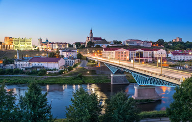

Regions of Belarus
Belarus, a generally flat country (the average elevation is 162 meters above sea level) without natural borders, occupies an area of 207,600 square kilometers, or slightly smaller than the state of Kansas. Its neighbors are Russia to the east and northeast, Latvia to the north, Lithuania to the northwest, Poland to the west, and Ukraine to the south. The country of Belarus is divided into six administrative districts, each centred around a major city:
Brest region
The Brest region, in the south-western corner of Belarus, is one of the six administrative regions (or oblasts) which make up the country. The Brest region of Belarus borders Poland in the west and the Ukraine in the south. The region has a large number of national parks and nature reserves, many of which have special status to protect rare flora and fauna.
The people of Brest region
- 1.347,0 million people live in the Brest region (on 1 January 2020)
- 88% of the population are Belarusians
- 6.4% are ethnic Russians
- 2.86% are Ukrainians
The main religion is Orthodox Christianity.
Towns and cities in the Brest region
Brest is the main city in the region. There are 16 areas, 20 towns (3 of them have regional submissions - Brest, Baranovichi, Pinsk), 9 settlements of city type, 2178 rural settlements.
Gomel region
The Gomel region is one of the 6 administrative regions (or oblasts) which make up Belarus. Gomel is located in the south-eastern corner of the country The Gomel region of Belarus borders Russia in the east and the Ukraine in the south. Around a third of the region is agricultural land.
The people of Gomel region
- 1.386,6 million people live in the Gomel region (on 1 January 2020)
- 72.93% of the population live in the towns and cities
- 88.22% of the population are Belarusians
- 7.71% are ethnic Russians
- 2.15% are Ukrainians
The main religion is Orthodox Christianity.
Towns and cities in the Gomel region
Gomel is the main city in the region, which is divided into 4 districts. The Gomel region is divided into 21 districts and there are 17 cities, 18 towns and 2608 villages.
Grodno region
The Grodno region lies in the west of Belarus. It is one of the six administrative regions (or oblasts) which make up the country. The Grodno region of Belarus borders Poland in the west and the Lithuania in the north. It's a popular international trading partner with both Europe and Russia.
The people of the Grodno region
- 1.025,8 million people live in the Grodno region (on 1 January 2020)
- 66.7% of the population are Belarusians
- 21.5% are Poles
- 8.15% are ethnic Russians
- 1.4% are Ukrainians
Orthodox Christianity and Catholicism are the main religions. There are 498 cultural and historical buildings in the region, including 248 Orthodox temples, 228 Catholic churches, 17 Protestant churches, 4 mosques and 1 synagogue.
Towns and cities in the Grodno region
Grodno is the main city in the region. There are a further 17 districts, 12 cities – of which 6 have their own regional administrations – and 21 towns.
Minsk region

The Minsk region, one of the six administrative regions (or oblasts) which make up Belarus, lies in the middle of the country and contains Minsk city, the capital of Belarus The Minsk region of Belarus is one of the most economically developed areas of the country, even though it has no international borders. 1.472,0 million people live in the Minsk region (on 1 January 2020).
Towns and cities in the Minsk region
Minsk city is the capital and main city with a further 24 towns in the region.
Mogilev region
The Mogilev region, in the east of the country, is one of the six administrative regions (or oblasts) of Belarus. The Mogilev region of Belarus borders Russia in the east. Just over half of the region is agricultural land and more than a third is forest.
The people of Mogilev region
- 1.023,0 million people live in the Mogilev region (on 1 January 2020)
- 75.79% of the population live in the towns and cities
- 88.7% of the population are Belarusians
Main religion is Orthodox Christianity, with a total of 17 religions practiced in the region.
Towns and cities in Mogilev
Mogilev is the main city of the region. There are a further 15 towns, of which two have their own regional administrations.
Vitebsk region
The Vitebsk region, one of the six administrative regions (or oblasts) which make up Belarus, is located in the north-east of the country The Vitebsk region of Belarus borders Russia, Lithuania and Latvia. The region is known as the Belarusian land of lakes (Belaruskaye Paazerye), and has more than 2800 lakes and 500 rivers. More than a third of the region is forest. Approximately 60% of these forests are centuries-old coniferous woods.
The people of Vitebsk region
- 1.133,4 million people live in the Vitebsk region (on 1 January 2020)
- 72.88% of the population live in the towns and cities
- 85.14% of the population are Belarusians
- 10.15% are ethnic Russian
The main religion is Orthodox Christianity.
Towns and cities in the Vitebsk region
Vitebsk is the main city of the region. There are a further 21 districts, 2 towns have their own regional administrations.
Go back up